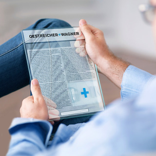

OESTREICHER+WAGNER als Arbeitgeber
JOBNOMADEN UND BERUFSARTISTEN JETZT BITTE WEGSEHEN.

UPDATE DICH SELBST.
Eine neue Version von Android? Ein neuer Druckprozess? In der Medienbranche kommt man schnell ins Hintertreffen. Deshalb ist nicht nur unsere Technik immer auf dem neuesten Stand, sondern dank Schulungen und Weiterbildungen auch unsere Mitarbeiter.
NUMMER EINS AM MARKT. UND BEI DER LEIDENSCHAFT.
Marktführer wird man nicht einfach so. Sondern nur mit zufriedenen Mitarbeitern und zufriedenen Kunden. Also dann, wenn ein Job nicht einfach nur ein Job, sondern eine Leidenschaft ist.
IN BAYERN ZU HAUSE. UND AUF DER GANZEN WELT.
Unsere Kundenliste ist fast ebenso lang wie unsere Unternehmensgeschichte. Und obwohl wir stolz sind, in Bayern zu Hause zu sein, ist unsere Arbeit auf der ganzen Welt zu finden. Eben immer da, wo unsere Kunden uns brauchen.
SIEHT AUS WIE EIN GLOBAL PLAYER. FÜHLT SICH AN WIE EIN FAMILIENUNTERNEHMEN.
Wir heißen nicht umsonst wie unsere Gründer. Denn obwohl wir ein international agierendes Unternehmen sind, herrscht bei uns eine familiäre Atmosphäre.
WENN DU EINE GRÜNE WIESE WILLST, EMPFEHLEN WIR DIE ISARAUEN.
Im Gegensatz zu den meisten Medienunternehmen sind wir nicht vor den Toren Münchens, sondern in München. Bequem zu erreichen und mitten in Giesing. Weil die Standortfrage auch eine Frage der Lebensqualität ist.
LEBEN ODER ARBEITEN? WARUM ODER?
Wir glauben, dass Arbeit zwar wichtig, aber längst nicht alles im Leben ist. Weil nur zufriedene Mitarbeiter für zufriedene Kunden sorgen.